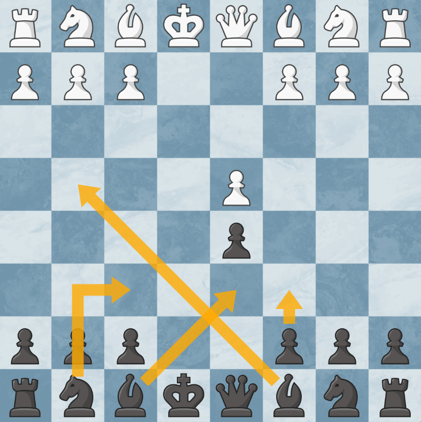

Obrona francuska
Obrona francuska jest jednym z najbardziej popularnych i solidnych debiutów w szachach, znanym ze swojej solidności i strukturalnej integralności. Rozpoczyna się ruchami:
1. e4 e6
Główną ideą obrony francuskiej jest natychmiastowe przygotowanie się do kontrataku na centrum, szczególnie na pionka d4, poprzez ruch 2. ... d5. Po 2. d4 d5, powstaje typowa pozycja, w której czarne wywierają presję na centrum białych.
Obrona francuska prowadzi do kilku głównych wariantów:
1. **Wariant wymienny (Exchange Variation):**
- 1. e4 e6 2. d4 d5 3. exd5 exd5
Ten wariant prowadzi do symetrycznej struktury pionowej, która często skutkuje równą grą, ale może być mniej dynamiczna niż inne warianty.
2. **Wariant Steinitza (Advance Variation):**
- 1. e4 e6 2. d4 d5 3. e5
Białe zamykają centrum, starając się uzyskać przestrzeń i inicjatywę. Czarne zazwyczaj odpowiadają 3. ... c5, próbując podważyć centrum białych.
3. **Wariant klasyczny (Classical Variation):**
- 1. e4 e6 2. d4 d5 3. Nc3
Białe rozwijają figury i zachowują możliwość wymiany w centrum lub pchnięcia pionkiem e5. Czarne mogą odpowiedzieć 3. ... Nf6, atakując pionka e4.
4. **Wariant Winawera:**
- 1. e4 e6 2. d4 d5 3. Nc3 Bb4
Czarne pinują skoczka na c3, co może prowadzić do skomplikowanych pozycji, zwłaszcza po ruchu 4. e5, gdy czarne często grają 4. ... c5, próbując podważyć centrum białych.
### Zalety Obrony Francuskiej:
- **Solidność:** Obrona francuska jest znana z solidności i mocnej struktury pionowej.
- **Elastyczność:** Daje czarnym różne możliwości odpowiedzi w zależności od stylu gry przeciwnika.
- **Kontratak:** Czarne często uzyskują silne możliwości kontrataku na skrzydłach lub w centrum.
### Wady Obrony Francuskiej:
- **Pion d5:** Często jest celem ataku białych, zwłaszcza po ruchu c4.
- **Aktywność białopolowego gońca:** Goniec na c8 może być trudno aktywizować, co jest jedną z głównych problemów w obronie francuskiej.
Obrona francuska jest preferowana przez wielu szachistów na wszystkich poziomach zaawansowania, od amatorów po arcymistrzów, ze względu na swoją solidność, elastyczność i bogactwo strategicznych możliwości.
